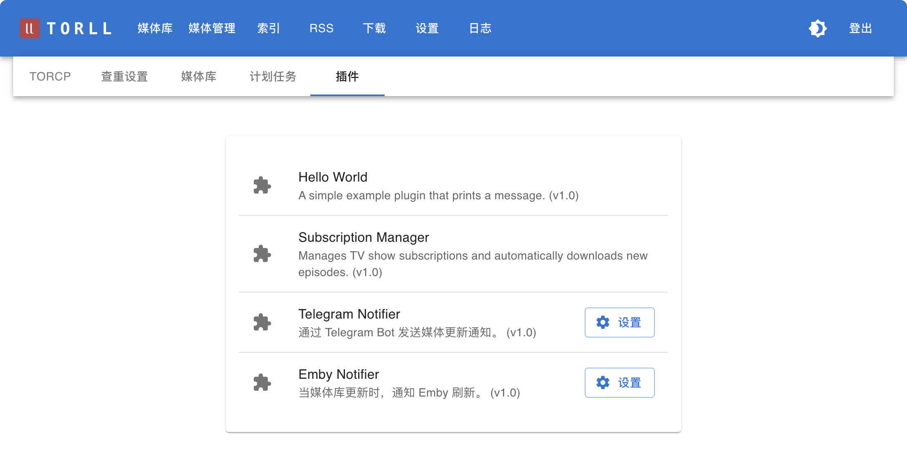

插件设置
插件用于扩展 torll2 的功能，例如发送通知。你可以在 设置 -> 插件 页面查看和管理所有可用插件。

1. Telegram Notifier
此插件可以在媒体库成功添加新内容（下载完成并整理完毕）时，通过一个 Telegram Bot 发送图文通知。
配置项
- 启用 Telegram 通知 (
enabled): 勾选此项以启用插件。 - Telegram Bot Token (
token): 你的 Telegram Bot 的 Token。你可以从 BotFather 获取。 - Chat ID (
chat_id): 接收通知的聊天 ID。可以是你的个人 ID，也可以是群组或频道的 ID。 - 消息模板 (
message_template): 自定义通知消息的格式。这是一个支持变量的文本框，你可以自由组织消息内容。
可用变量:
- {media_type_icon}: 媒体类型图标 (🎬 或 🎥)
- {media_type_text}: 媒体类型文字 (电影或剧集)
- {title}: 标题
- {year}: 年份
- {torname}: 种子名称
- {downloader}: 下载器名称
- {size}: 文件大小
- {path}: 文件相对路径
- {overview}: 剧情简介
默认模板示例:
**{media_type_icon}{media_type_text}:** **{title}** ({year}) {tvinfo}
**种子:** {torname}
**下载器:** {downloader} | {size}
**路径** `{path}`
2. Emby Notifier
此插件的功能非常专一：当 torll2 的媒体库有内容更新时，它会自动向你的 Emby/Jellyfin 服务器发送一个“刷新媒体库”的 API 请求，从而实现媒体的即时入库，无需等待 Emby 的定时扫描。
配置项
- 启用 Emby 通知 (
enabled): 勾选此项以启用插件。 - Emby 主机地址 (
host): 你的 Emby 或 Jellyfin 服务器的 URL 地址。 - 示例:
http://192.168.1.10:8096 - Emby API 密钥 (
api_key): 用于 API 访问的密钥。你可以在 Emby/Jellyfin 的管理后台 -> API 密钥 页面生成一个。